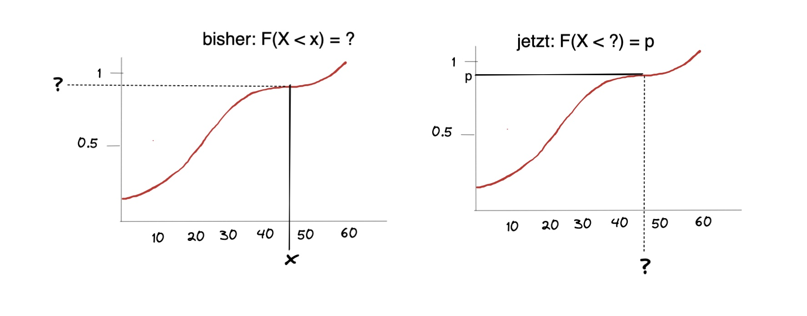

Statistik#
Zusammenfassung für das Modul Statistik II
Wahrscheinlichkeiten#
Ergebnisse \(\{ w_{1}, w_{2},... \} = \Omega\) Ergebnismenge
Ereignis = eine Teilmenge der Ergebnismenge \(A \subseteq \Omega\)
Mengen#
Schnittmenge \(A \cap B\)
Vereinigungsmenge \(A \cup B\)
Komplementärmenge \(A^{C}\) bzw. \(\bar{A}\)
Laplace-Wahrscheinlichkeit#
einfachste Wahrscheinlichkeit: $\( P(A) = \frac{m}{n} = \frac{\text{Anzahl Ereignisse A}}{\text{Gesamtzahl Ereignisse}} \)\( Beispiel: 20 Menschen in Raum, davon 10 cool => Wahrscheinlichkeit mit coolen Menschen zu reden: \)P(A) = \frac{10}{20} = 0.5 = 50%$
bedingte Wahrscheinlichkeit#
Wahrscheinlichkeit von Ereignis A, wenn B schon eingetreten ist = bedingte Wahrscheinlichkeit A gegeben B = \(P(A | B)\)
Berechnung: \(P(A|B) = \frac{P (A\cap B)}{P(B)}\)
Beispiel: Porschefahrer: 10% der Bevölkerung sind Porschefahrer und 50% von denen sind Arschlöcher (isso)

Wahrscheinlichkeit Porschefahrer: \(P(B) = 10\%\)
Wahrscheinlichkeit dass Porschefahrer Arschlöcher sind: \(P(A|B) = 50\%\)
wie hoch ist die Wahrscheinlichkeit, dass zufällige Person vor dir Porschefahrer und Arschloch ist?
\(P(A \cap B) = P(A|B) \cdot P(B)= 0.5 \cdot 0.1 = 0.05 = 5\%\)
totale Wahrscheinlichkeit#
wenn die Bedingungen die Ergebnismenge disjunkt zerlegen, heißt alle Möglichkeiten darstellen, bspw. regnet und regnet nicht = \(B ; \bar{B}\)
für die Wahrscheinlichkeit A eines Eregnisses: \(P(A) = \sum_{i=1}^{k}P(A|B_{i})* P(B_{i})\)
Beispiel: wie hoch ist die Wahrscheinlichkeit, dass Person vor dir Arschloch ist?
Arschlöcher unter Porschefahrern : \(P(A|B) \cdot P(B) = 0.05\)
Arschlöcher in Gesamtbevölkerung: \(P(A|\bar{B}) \cdot P(\bar{B}) = 0.9 \cdot 0.2 = 0.045\)
\(P(A) = 0.05+0.045 = 0.095 = 9,5 \%\)
Satz von Bayes#
mit diesem lässt sich in Verbindung mit der totalen Wahrscheinlichket eine Umkehranalyse betreiben: $\( P(B_i | A) = \frac{P(A|B_i) \cdot P(B_i)}{\sum_{i=1}^{k}P(A|B_{i})* P(B_{i})} = \frac{P(A|B_i) \cdot P(B_i)}{P(A)} \)$
Beispiel: Wie hoch ist die Wahrscheinlichkeit, dass das Arschloch vor dir nen Porsche fährt? $\( P(B|A) = \frac{0.5 \cdot 0.1 }{0.095} \approx 53\% \)$ => obwohl Porschefahrer nur 10% der Bevölkerung ausmachen, stellen sie 53% der Arschlöcher
Graphik der Rückwärtsanalyse

Unabhängigkeit#
zweier Ereignisse = kein Zusammenhang:
\(P(A \cap B) = P(A) * P(B)\)
Beispiel: ist es nur zufällig mit den Porschefahrern?
\(P(A \cap B) = 0.05\)
\(P(A) \cdot P(B) = 0.095 \cdot 0.1 = 0.0095\)
\(0.05 \neq 0.0095\) : ist nicht zufällig!
Stichproben#
Wir wollen aus den Eigenschaften einer großen Menge die Eigenschaften einer Stichprobe benennen: bspw. wir wissen alles über Würfel, wie wahrscheinlich ist dann eine Stichprobe, bei der 3 Mal hintereinander eine 6 gewürfelt wird.
wenn Ergebnissmenge eines Experiments nicht bekannt => Stichproben
aus Stichproben Wahrscheinlichkeit ablesen
Wahrscheinlichkeit für Objekt in Grundgesamtheit benötigt
wichtig:
Fakultät \(k!\) und Binomialkoeffizienten \(\binom{a}{b}\)
Umfang Grundgesamtheit \(N\)
Umfang Stichprobe \(n\)
Anzahl möglicher Stichproben:
mit Zurücklegen |
ohne Zurücklegen |
|
|---|---|---|
mit Reihenfolge |
\(\frac{N!}{(N-n)!}\) |
\(N^n\) |
ohne Reihenfolge |
\(\binom{N}{n}\) |
\(\binom{N+n-1}{n}\) |
Zufallsvariabeln (Eindimensional)#
Empfehlenswertes Video zum grundlegenden Verstehen!
mathematisch |
Beispiel |
|---|---|
Ergebnismenge \(\Omega\) |
Studis in VL mit Attributen Alter, Kontostand, … |
Auswahl \(\omega\) |
Ein Teilnehmer aus der VL |
Abbildung X auf Omega \(X:\Omega\) |
Verteilungen des Alters unter den Studenten |
\(X(\omega)\) |
Kontostand des ausgewählten Studenten |
Alter, Geschlecht etc sind Zufallsvariablen unter den Studierenden

Arten von Zufallsvariablen:
stetig: nicht abzählbar, kann unendlich sein
diskret: Zählbar (wie natürliche Zahlen)
Dichte- und Verteilungsfunktion#
Verteilung der Zufallsvariable (stetig oder diskret) = Dichtefunktion f(x) genannt
Kumulieren der Dichtefunktion = Verteilungsfunktion \(F(x) = \sum f(x_i)\)
Berechnung der Verteilungsfunktion#
bei stetigen Variablen muss die Verteilungsfunktion aufwendiger berechnet werden = Integrieren
Wertebereich: \(X(\Omega) = \mathbb{R}\)
es gilt: \(f(x) \ge 0 \ \forall x;\ \int_{-\infty}^\infty f(t)dt=1\)
Fläche unter Kurve = 1 = 100%
Beispielrechnung: \(P(X \le x) = F(x) = \int_{-\infty}^x f(t)dt\)
bei Dichtefunktion mit Grenzen: \(f(x) = x\ ,\ a\le x \le b\)
Verteilungsfunktion: $\( F(x) = \begin{cases} 0 & x < a \\ \int_a^b x & a \le x \le b \\ 1 & x > b \end{cases} \)$
und der Test \(P(x \le X) = \int_a^x f(x)\)
Rechnen mit der Verteilungsfunktion#
Würfelwürfe zwischen 2 und einschließlich 5:
f(x) = Dichte der Würfelwürfe
F(x) = Verteilungsfunktion der Würfelwürfe
Oder Anzahl Menschen unter 50: (stetiges Alter)
\(f(x)\) = Dichtefunktion des Alters
\(F(x)\) = Verteilungsfunktion
Gesucht: \(\sum_{i=1}^{50} f(x_i)\)
Lösung: \(F(50)\)

weiteres in der Formelsammlung
Modus#
Definition: x-Wert, bei dem f(x) maximal
bei zwei gleichen Werten = undefiniert
berechnen über Extrema der Funktion?

Erwartungswert E(X)#
Gegenstück zu arithmetischen MIttel, meist „Schwerpunkt“ / Symmetriestelle der Funktion
diskrete Variable:
\(E(X) = \sum_{i=1}^\infin x_i \cdot f(x_i) = x_1 \cdot f(x_1)+ x_2 \cdot f(x_2)+...\)
Beispiel: Erwartungswert eines Würfelwurfes
\(\frac{1}{6} \cdot 1+ \frac{1}{6} \cdot 2+ ... = 3.5\)
stetige Variable:
\(E(x) =\int_{-\infty}^\infty x * f(x)dx\)
Beispiel: Alle 6 Minuten kommt Straßenbahn, wie lange muss ich wahrscheinlich warten wenn ich irgendwann losgehe?
graphische Darstellung:
Quantile#

Berechnung: entweder ablesen, kompliziert berechnen oder mit Normalverteilung später
Varianz + Standardabweichung#
wie bei Statistik I
Varianz für diskrete X: $\( Var(x) = \sum_{i=1}^\infty x_i^2 *f(x_i) - (E(X))^2 \)\( für **stetige** *X* \)\( Var(x) = \int_{-\infty}^\infty x^2 *f(x)dx - (E(X))^2 \)$
Varianz: \(\sigma_X = \sqrt{Var(x)}\)
Beispiel: Würfel mit E(X) = 3.5 (Standardwürfel) $\( Var(x) = E(X^2) - (E(X))^2 \\ E(X^2) = \sum_{i=1}^\infty x_i^2 *f(x_i) = \frac{1}{6} \cdot 1^2+...= 15.666 \\ Var(x) = 15.666 - 3.5^2 = 3.4166 \\ \sigma_X = \sqrt{3.4166} \approx 1.8480 \)$
Zufallsvariablen (mehrdimensional)#
jetzt eine Abbildung von Stichproben auf mehrere Variablen, beispielsweise Studierende mit Alter X und Notenschnitt Y
für diskrete Verteilungen:
Beispiel
4mal Münzewerfen und Reihenfolge notieren (Z=Zahl, K=Kopf)
mögliche Kombination: \(N=2, n=4 \to N^n = 16\)
mögliche Ereignisse |
Verteilung |
|---|---|
|

bedingte Dichte#
von X gegeben Y = \(\frac{\text{Wahrscheinlichkeit dass beides eintritt}}{\text{Wahrscheinlichkeit dass y eintritt}} \to f_X = \frac{f(x,y)}{f_Y(y)}\)
Graphisch: 
Beispiel
Anzahl der Köpfe gegeben Anzahl der Wechsel 
also Spalten nehmen und durch Randdichte des gegebenen teilen!
Beispiel in erster Zeile, erster Spalte: \(f(x=0 | \underbrace{y=0}_{gegeben})= \frac{f(x,y)}{f_y(y)} = \frac{1/16}{1/8}= 0.5\)
stochastische Unabhängigkeit#
gegeben, wenn \(f(x,y) = f_X(x) \cdot f_Y(y)\)
im Beispiel: \(f(0,0)\to \underbrace{\frac{1}{16} \neq \frac{1}{8} \cdot \frac{1}{16}}_{nicht \ unabh.} \gets f_X(x) \cdot f_Y(y)\)
Kovarianz#
Allgemein: \(Cov(X,Y)= E\Big[ \big(X-E(X)\big) - \big( Y - E(Y) \big) \Big]\)
Veranschaulichung:
Also: Kovarianz kleiner 0 => große Werte von x hängen mit kleinen Werten von y zusammen
Berechnung: ist scheiße!
Beispieltabelle:
Vorgehen: (diskret)
Randhäufigkeiten bestimmen: bspw. für X: 200/320 und 120/320
bedingte Häufigkeiten bestimmen: Zelle / Gesamtergebnis: 40/320
dann alle Zellen mit bedingten Häufigkeiten * Randhäufigkeit X * Randhäufigkeit Y
und dann alles aufsummieren
Vorgehen: (stetig)
Randdichte von X bestimmen: \(f_X(x)=\int_a^b f(x,y) dy\) = Dichtefunktion nach Y integrieren
dann \(E(X) = \int_a^b x f_X(x)\)= mit x multipliziert integrieren
Dann \(E(X Y) = \int \int x \cdot y \cdot f(x,y) \ dx dy\)
Beispiel:
E(X) = 1.5
E(Y) = 2
und dann ganz viel Müll, letztendlich: \(Cov(X,Y) = 0\)
=> gibt Zusammenhang zwischen Anzahl Köpfe und Anzahl Wechsel, aber nicht stochastisch unabhängig!
Verteilungen#
für Verteilungen gibt es einige typische, anhand derer Sachen einfacher berechenbar sind, insbesondere von Interesse ist die Normalverteilung
Diskrete Verteilungen#
Verteilungen mit diskreten (abzählbaren) Zufallsvariablen
Bernoulli Verteilung#
binäre Verteilung als 0 oder 1
bspw. Klausur bestanden / nicht bestanden mit Wahrscheinlichkeit p
Dichtefunktion: \(f(x_i) = p^{x_i} * (1-p)^{1-x_i}\) für \(x_i = 0,1\)
ist Spezialfall der Binomialverteilung: \(X \sim Bin(1,p)\)
Binomialverteilung#
Dichtefunktion: $\( f(x_i) = \underbrace{\binom{n}{x_i}}_{\text{Binomkoeff}} * \underbrace{p^{x_i}}_{\text{Erfolge}} * \underbrace{(1-p)^{n-x_i}}_{\text{Misserfolge}} \)$ Binomkoeffizient beschreibt Anzahl aller möglichen Kombinationen

Binomialverteilung = Situation Ziehen mit Zurücklegen
Urne mit N Kugeln, davon M mit interessierender Eigenschaft
n Kugeln ziehen mit Zurücklegen
\(X \sim Bin(n,p)\) mit \(p = M / N\)
hypergeometrische Verteilung#
Ziehen ohne Zurücklegen
Urne mit N Kugeln, davon M mit interessierender Eigenschaft
n ziehen ohne zurücklegen
\(X \sim Hyp(n,M,N)\)
Dichtefunktion: $\( f(x_i) = \frac{ \binom{M}{x_i} * \binom{N-M}{n-x_i} }{ \binom{N}{n}} \)$
Poisson Verteilung#
X diskrete Zufallsvariable: 0, 1, 2, …
Dichtefunktion: \(f(x_i) = \frac{\lambda^{x_i}}{x_i!} e^{-\lambda}\)
auch Verteilung der seltenen Ereignisse
Normalverteilung#
„The one Verteilung to rule them all“
Dichtefunktion: \(f(x)= \frac{1}{\sqrt{2\pi} * \sigma} * exp \Big( - \frac{(x-\mu^2)}{2 \sigma^2}\Big)\)
Erwartungswert = \(\mu\)
Varianz = Standardabweichung^2 : \(\sigma^2 = p\)
kovergiert gegen 0, Fläche unter Kurve = 1
Schreibweise: \(N(\mu, p)\)
Standardnormalverteilung#
Falls \(\mu = 0\) und \(\sigma^2 = 1 \to\) N(0,1) = Standardnormalverteilung
Dichte \(\phi(z)\) und Verteilungsfunktion \(\Phi(z)\) der SNV

praktisch für: wir haben eine Verteilung, transformieren sie zu SNV, berechnen was wir berechnen wollen und transformieren zurück
Rechnungen#
Wahrscheinlichkeit
\(\phi(x) = ?\) also Höhe der Normalverteilung an bestimmten X-Wert:
Rechnerisch: mit R, bspw. hier
x = 1 ## das x
m = 0 ## das mu der Verteilung
sd = 1 ## die Standardabweichung
## Berechnung der Höhe mit pnorm()
dnorm(x,m,sd)
Output:
0.2419
kleiner als: Wahrscheinlichkeiten
Wahrscheinlichkeitsrechnungen bei der Normalverteilung: Wie hoch ist die W., dass Wert x kleiner als 1 ist?
Rechnerisch: mit R, bspw. hier
p = 1 ## der gesuchte Wert
m = 0 ## das mu der Verteilung
sd = 1 ## die Standardabweichung (Wurzel der Varianz!)
## Berechnung der Wahrscheinlichkeit mit pnorm()
pnorm(p,m,sd)
Output:
0.8413447
wenn nicht unterhalb der Wert gesucht wird, sondern oberhalb:
pnorm(p,m,sd,lower.tail=FALSE)
Quantile:
bei welchem Wert werden 69 % der Ereignisse abgedeckt?

Rechnerisch:
q = 0.69 ## der gesuchte Wert
m = 0 ## Mittelwert mu der Verteilung
sd = 1 ## die Standardabweichung
## Berechnung der Wahrscheinlichkeit mit pnorm()
qnorm(p,m,sd)
Output
0.49585
Schätzen#
Wir wollen aus den Eigenschaften einer Stichprobe Informationen über die Grundgesamtheit in Erfahrung bringen, bspw. über Würfelwürfe etwas über die Gezinktheit eines Würfels = induktive Statistik
Beispiel: erwarteter Beliebtheitsgrad FDP \(E(\ \text{Bel}_{FDP} \ )\), anhand Stichprobe aus historischen Daten
Methoden zu Bsp.:
Punktschätzung: beste Vermutung für Wert des Parameters in Grundgesamtheit
FDP wird nicht beliebt sein, nur 7%:
\(E(\ \text{Bel}_{FDP} \ ) = 0.07\)
Intervallschätzung: in welchem Bereich liegt ein Parameter?
Ich bin mir zu 95% sicher, dass seine Beliebtheit zwischen 5 und 10 % ist
\(0.05 \le E(\ \text{Bel}_{FDP} \ ) \le 0.1\)
Test: Treffen bestimmte Hypothesen zu?
Ich bin mir zu 99% sicher, dass meine Behauptung \(E(\ \text{Bel}_{FDP} \ ) = 0.07\) stimmt
hoffen wir mal ne :grin:
Punktschätzer#
Suchen Parameter \(\theta\) der Stichprobe \(X_1,...,X_n\)
Punktschätzer ist Funktion \(t(X_1,...,X_n)\)
Anwenden dieser Funktion auf Gesamtheit
Erwartungswertschätzer = simpler Durchschnitt \(\bar{X}\)
Varianzschätzer:
\(\tilde{S}^2 = \frac{1}{n} \sum (X_i-X_n) \text{ mit } E(\bar{S}^2) = \frac{n-1}{n} \sigma^2\)
korrigierter Schätzer: \(S^2 = \frac{1}{n-1} \sum (X_i-X_n) \text{ mit } E(S^2) = \sigma^2\)
Beispielaufgabe Schätzer: drei Melonen
\(t_1(X_1,X_2,X_3)= \frac{3}{6}(X_1+2 X_2 - X_3)\)
\(t_2(X_1,X_2,X_3)= \frac{2}{8}(X_1+5 X_2 + X_3)\)
Erwartungswerte der Schätzer: ersetzen \(E(X) = \mu\) $\( E(t_1) = E[\frac{3}{6}(X_1+2 X_2 - X_3)] \\ = \frac{3}{6}(u+2u-u) = \frac{6}{6}u = u \\ \\ E(t_2) = E[\frac{2}{8}(X_1+5 X_2 + X_3)] \\ = \frac{2}{8}(u+5u+u) = 2/8 \cdot(7u) = 1.75 u \)\( Varianz der Schätzer: alleinstehende \)Var(X) = \sigma^2\((alles was rauskommt quadrieren!) \)\( Var(t_1) = Var[\frac{3}{6}(X_1+2 X_2 - X_3)] \\ = \frac{3}{6}^2 \Big( 1^2 Var(X_1)+ 2^2 Var(X_1) + (-1)^2 Var(X_3) \Big) \\ = \frac{9}{36} (1+4+2) \cdot Var(X) = 1.5 \cdot \sigma^2 \)$
Intervallschätzer#
Interesse ist Angabe eines Intervalls, das den Parameter enthält
Wahrscheinlichkeit \(\alpha\) (\(0 \le \alpha \le 1\)) gegeben (genannt Irrtumswahrscheinlichkeit)
Standardabweichung der Grundgesamtheit bekannt:
Erinnerung: Standardabweichung \(\sigma = \sqrt{Varianz: \ \sigma^2}\)
n <- 39 ## Stichprobengröße
mean <- 7.77 ## Stichprobenmittel
sd <- 0.46 ## Stichprobenabweichung (Schätzung)
a <- 0.05 ## alpha
error <- qnorm(1-a/2)*sd/sqrt(n) ## Fehler berechnen mit Normalv.
high <- mean + error
low <- mean - error
print(c(low, high)) ## untere Grenze, obere Grenze
Varianz unbekannt, dafür Standardabweichungschätzung der Stichprobe:
nur bei \(n\ge 30\), weil erst dann t-Verteilung = SNV
n <- 39 ## Stichprobengröße
mean <- 7.77 ## Stichprobenmittel
s <- 0.46 ## Stichprobenabweichung (Schätzung)
a <- 0.05 ## alpha
margin <- qt(1-a/2,df=n-1)*s/sqrt(n) ## Konfidenzfehler aus t-Verteilung
high <- mean + margin
low <- mean - margin
print(c(low, high)) ## untere Grenze, obere Grenze
Tests#
wir haben eine Hypothese und eine derzeitige Meinung
Nullhypothese \(H_0\): „die Erde ist eine Scheibe“
Alternativhypothese \(H_1\): „Erde hat Kugelgestalt“
=> Testproblem: \(H_0\) vs. \(H_1\)
wir bauen Entscheidungsregel, ab der wir \(H_0\) verwerfen
\(H_0\) ist real |
\(H_1\) ist real |
|
|---|---|---|
\(H_0\) wird verworfen |
Fehler 1. Art |
:white_check_mark: |
\(H_0\) bleibt |
:white_check_mark: |
Fehler 2. Art |
Entscheidungsregel sagt, dass Fehler 1. Art nur mit Wahrscheinlichkeit \(\alpha\) passieren soll
Arten von Hypothesen:
Test |
Hypothese \(H_1\) |
Gegenhypothese \(H_1\) |
|---|---|---|
linksseitig |
\(\mu \ge \mu_0\) |
\(\mu < \mu_0\) |
rechtsseitig |
\(\mu \le \mu_0\) |
\(\mu > \mu_0\) |
Zweiseitig |
\(\mu = \mu_0\) |
\(\mu \ne \mu_0\) |
Beispiel:
Bäcker behauptet, seine Brötchen sind im Schnitt schwerer/exakt 50 Gramm
ich behaupte, dass die Brötchen kleiner als 50 Gramm sind
Aufbau des Tests: wir suchen realen Durchschnitt \(\mu\)
Brötchengewicht X
Annahme: Brötchen sind normalverteilt \(X \sim N(\mu, \sigma^2)\)
\(H_0: \mu \ge 50\) vs. \(H_1: \mu < 50\) (unzufrieden)
Durchführung:
wir ziehen Stichgröße vom Umfang n \(X_1, ...,X_n\)
\(\bar{X}\) = Durchschnittsgewicht = Prüfgröße
Berechnung: (mit beispielhaften Werten)
\(\sigma^2 = 1.44\)
\(\alpha = 5\%\)
\(\bar{X} = 51\)
\(S = 2.5\)
Entscheidungsregel: (aus Formelsammlung: t-Test, linksseitig)
gauß-test in R
maschine mit Varianz = 0.5
Stichprobe mit 36 Schrauben, Durchschnitt=9.7, Varianz= 0.5
\(H_0: \mu = 10\) (Schrauben sind im Durchschnitt 10 cm lang)
\(H_1: \mu \ne 10\) (nein sind sie nicht)
library(compositions)
## x <- c() ## wenn reale Daten
x <- rnorm(36,9.7, 0.5) ## oder erstellen (n,mean,sd)
Gauss.test(x, y = NULL,
mean = 10, ## Nullhypothese über mu
sd = 0.5, ## die Varianz der Grundgesamtheit
alternative = "two.sided") ## "two.sided", "less", "greater"
Output:
data: x
T = 9.8378, mean = 10, sd = 1, p-value = 0.05185
alternative hypothesis: two.sided
p > 0.05 = schlechte \(H_0\) = \(H_1\) wird angenommen.
Maschine muss rekalibriert werden, um Durchschnitt von 10cm wiederzubekommen.
t-test in R
## x <- c() ## wenn reale Daten der Stichprobe
x <- rnorm(29,85.74, 3.43) ## oder erstellen (n,mean,sd)
t.test(x, y = NULL,
alternative = "two.sided", ## "two.sided", "less", "greater"
mu = 84.1,
conf.level = 0.95,)
## Output: true mean is not equal to 84.1
praktische Sachen für Prüfung
Bei Entscheidungen gegen H0 und damit für H1 spricht man von einem signifikanten Ergebnis
Konfidenznivau + Signifikanzniveau = 100%